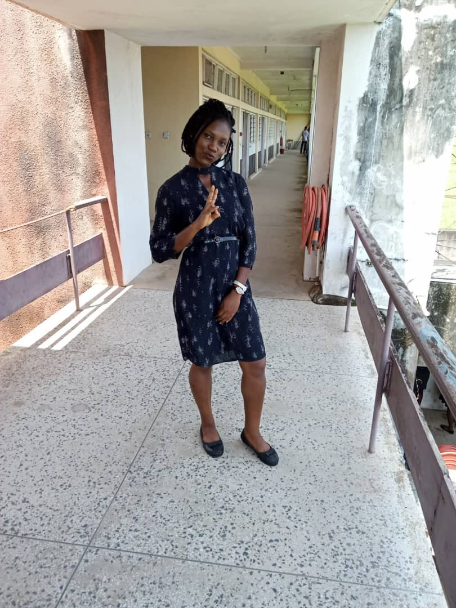

ABOUT ME
My name is Blessing Morayo Obakhavbaye.
I finished my Ond at Yaba college of Technology from the department of Food Technology.
I am am from Edo State but was born and live in Lagos.I am currently undertakin courses on web devolopment, frontend to be precised and I am determined,focused to make out the best from it.
My expectations in this web design and development training is to have vast knowledge on how to build responsive, accessible and user friendly websites.Subsequently, I would like to work with other developers, provide solutions for clients while i continue to work on my skills to deliver better.
Important things to know about me are:
- I have grit and growth mindset in which whatever i want to do,
i put in my best. - I am organized,proactive and make my priorities right.
- I love to be around people who will help me grow and push me to do more.
My favourite quote is "WHATEVER IS WORTH DOING AT ALL IS WORTH DOING WELL" by Philip Stanhope
